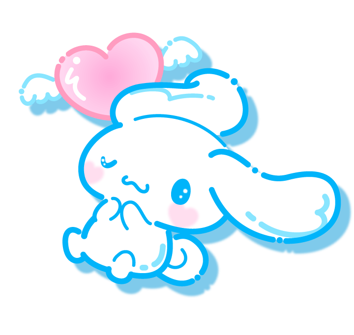
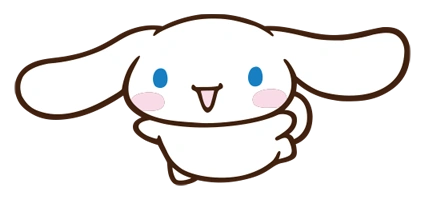

Cinnamoroll

1

2


Cinnamoroll is Cafe Cinnamon's official mascot. He is quite shy, but very friendly, and sometimes takes a nap on customers' laps. He can fly through the air by flapping his huge ears
Know more now!
© 2024 The Odin Project. All rights reserved.